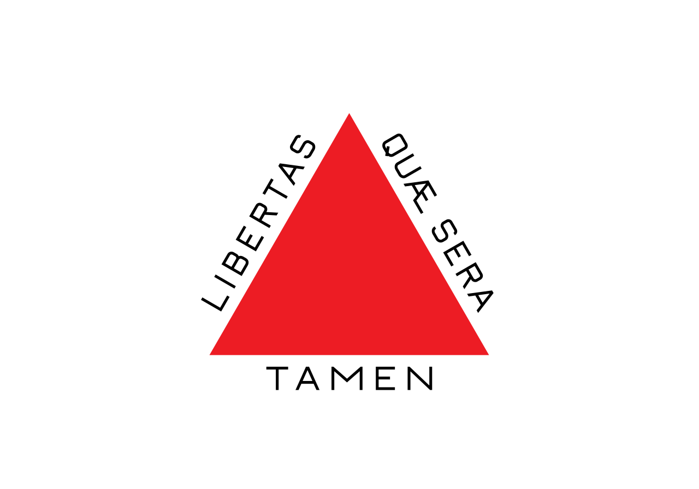
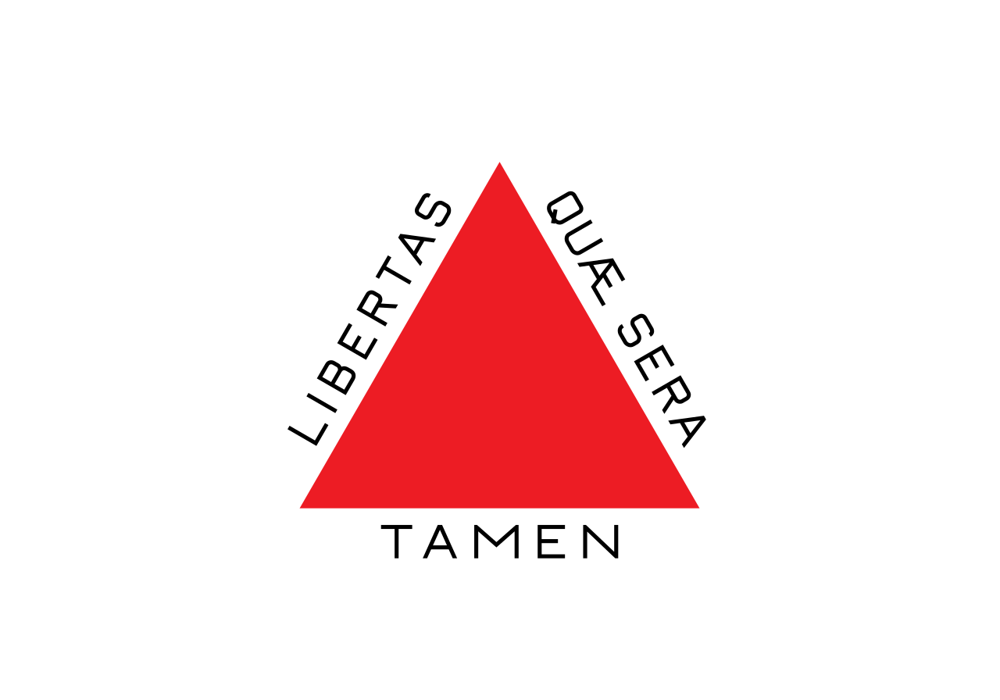

Licenças
Nosso serviço cobre a obtenção de licenças para cargas excedentes, permitindo o transporte sem contratempos. Desde caminhões simples até configurações mais complexas, como bitrens e rodotrem ou cargas especias que exigem escolta com parcerias especializadas.
Adaptamos nossos serviços para atender às especificidades de cada cliente e de cada tipo de veículo ou equipamento.
Garantimos um processo simplificado e ágil, reduzindo a burocracia e o tempo de espera para que você possa se concentrar no que realmente importa.

 
